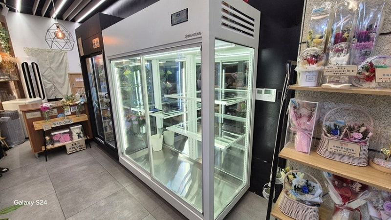
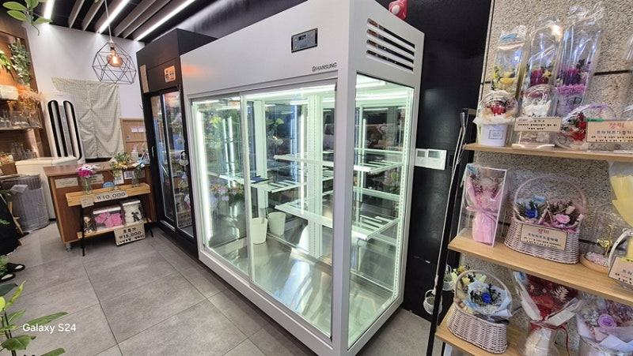
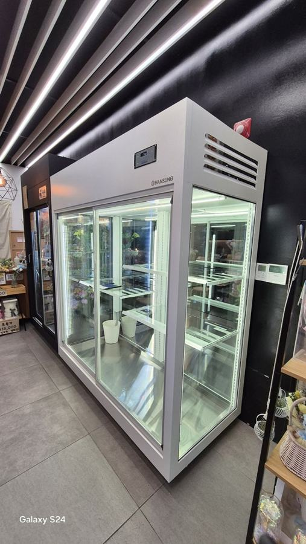
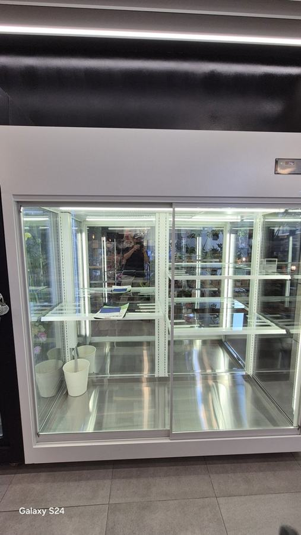
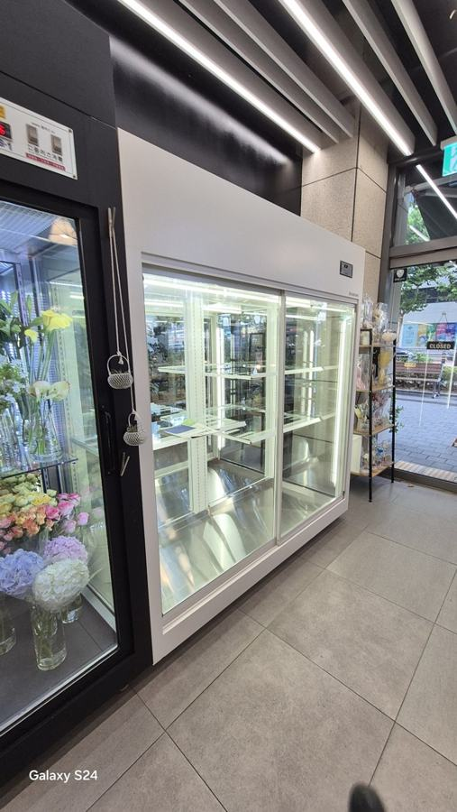
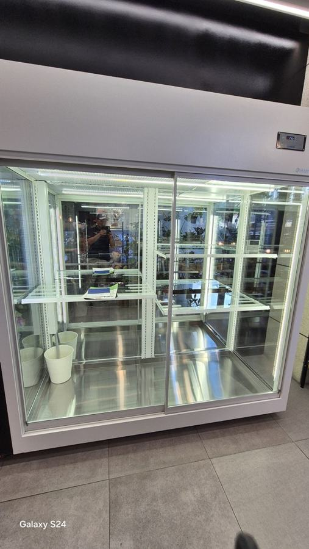
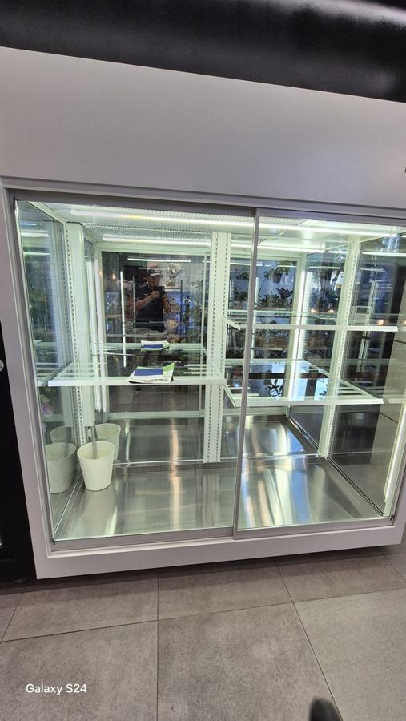
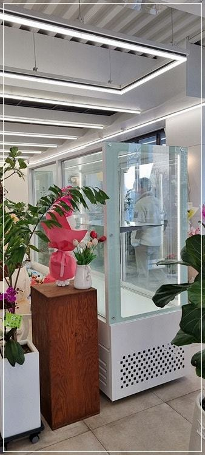

꽃냉장고
꽃냉장고 간냉식 직냉식, 냉각 방식에 따라 달라지는 꽃 관리

꽃냉장고는 직냉식이면 성에와 칸별 온도 차를, 일반 간냉식이면 강한 바람에 의한 꽃잎 건조를 관리해야 합니다. 그래서 생화 매장에는 팬을 쓰되 바람을 약하고 고르게 돌리는 꽃 전용 간접 냉각 구조가 많이 쓰이며, 어떤 방식이든 습도와 바람이 꽃에 직접 닿는지를 함께 보셔야 합니다.
안녕하세요. 플라워샵과 꽃 공방의 꽃냉장고를 매장 동선에 맞춰 만드는 한성쇼케이스입니다.
꽃냉장고 견적을 받다 보면 간냉식, 직냉식이라는 말을 듣게 되고, 인터넷에서는 어느 쪽이 좋다는 이야기가 서로 엇갈립니다.
음료나 케이크 쇼케이스에서 하는 설명을 그대로 꽃에 적용하면 판단이 어긋나기 쉽습니다.
꽃은 잘린 뒤에도 숨을 쉬는 상품이라 온도만큼 바람과 습도에 민감합니다. 같은 온도에 맞춰 놓아도 냉각 방식에 따라 꽃잎 끝이 마르는 속도, 유리에 김이 서리는 정도, 칸마다 꽃 상태가 달라집니다.
오늘은 꽃냉장고에서 냉각 방식이 어떤 차이를 만드는지, 방식별로 사장님이 신경 써야 할 관리는 무엇인지 정리해 드리겠습니다.
1. 직냉식 꽃냉장고의 특징
직냉식은 냉각 파이프가 벽면에 붙어 주변 공기를 직접 식힙니다. 바람을 일으키지 않으니 꽃잎이 바람에 마르는 일은 적습니다.
구조가 단순하다는 것도 장점입니다.
대신 벽면에 성에가 쌓여 정기적으로 제거해야 하고, 파이프와 가까운 쪽은 차갑고 먼 쪽은 덜 차가워 칸마다 온도가 다를 수 있습니다.
벽에 붙은 꽃이 냉해를 입거나, 문 쪽 꽃이 빨리 피는 일이 생길 수 있어 꽃병 배치에 신경을 써야 합니다.
- 냉각면 가까이에 예민한 꽃을 두지 마세요.
- 성에가 두꺼워지기 전에 주기적으로 제거하세요.
2. 일반 간냉식의 특징
간냉식은 팬으로 찬 공기를 돌려 내부 온도를 고르게 맞추고, 성에가 생기지 않는 것이 장점입니다. 음료나 디저트 쇼케이스에 많이 쓰이는 방식입니다.
문제는 바람의 세기입니다. 음료를 빨리 식히도록 맞춘 강한 순환 바람이 꽃에 그대로 닿으면 수분이 빠르게 증발해 꽃잎 끝이 마르고 갈색으로 변합니다.
온도는 일정한데 꽃이 빨리 상한다면 이 경우일 가능성이 큽니다.


3. 꽃 전용 간접 냉각이 다른 점
꽃 전용으로 설계된 간접 냉각은 팬을 쓰되 미세한 기류로 부드럽게 순환시킵니다. 온도를 고르게 유지하면서도 꽃잎에 강한 바람이 닿지 않고, 습도를 높게 지켜 수분이 덜 빠지도록 만든 구조입니다.
꽃의 호흡을 늦추려면 4~8°C 사이를 일정하게 유지하는 것이 좋다고 안내드리는데, 이 범위를 지키면서 습도까지 잡는 것이 전용 구조의 역할입니다.
열이 적은 LED 조명을 쓰는 것도 꽃이 받는 스트레스를 줄여 줍니다.
4. 냉각 방식과 함께 볼 것
문 방식도 함께 정하세요. 매장이 좁다면 앞뒤 공간을 차지하지 않는 슬라이딩 문이, 큰 꽃다발을 자주 꺼낸다면 활짝 열리는 여닫이 문이 편합니다.
하루에 다루는 꽃의 양과 꽃병 크기에 맞춰 선반 간격을 조절할 수 있는지도 확인해 보세요.
어떤 방식이든 기계실 콘덴서에 먼지가 쌓이면 냉각 효율이 떨어지고 고장 원인이 됩니다. 한 달에 한 번은 먼지를 털고 배수관이 막히지 않았는지 점검해 주세요.
이미 직냉식이나 일반 간냉식 제품을 쓰고 계시다면 바로 바꾸기보다 꽃병 위치부터 조정해 보세요. 바람이 세게 닿는 자리에는 줄기가 굵고 잎이 두꺼운 소재를, 바람이 약한 안쪽에는 꽃잎이 얇은 장미나 수국을 두면 같은 장비에서도 꽃 상태가 한결 오래 갑니다.
- 공간에 맞춰 슬라이딩·여닫이 문을 고르세요.
- 콘덴서 먼지와 배수관을 매달 점검하세요.
체크리스트
- 냉각 방식과 바람 세기
- 칸별 온도 차와 성에 관리
- 습도 유지 구조
- 열이 적은 LED 조명
- 슬라이딩·여닫이 문 방식
- 콘덴서 먼지와 배수관 점검
현장에서 자주 보는 경우: 냉장고에 넣었는데도 잎 끝이 갈색으로 변할 때
꽃을 진열하자마자 고개를 숙이거나, 분명 냉장고에 넣어 두었는데 잎 끝이 갈색으로 변한다며 상담하시는 플로리스트분들이 많습니다.
확인해 보면 기계 결함보다는 바람과 습도를 꽃에 맞게 조절하지 못하는 장비의 한계인 경우가 대부분입니다.
직냉식은 성에 제거가 번거롭고, 강한 팬 순환 방식은 온도는 일정해도 수분이 빨리 날아갑니다. 그래서 미세한 기류로 부드럽게 돌리면서 습도를 높게 지키는 꽃 전용 간접 냉각을 권해 드리고, 매장의 채광과 배수 환경도 함께 살펴본 뒤 구성을 정합니다.








자주 묻는 질문
음료용 간냉식 냉장고에 꽃을 넣어도 되나요?
단기간은 가능하지만 바람이 강해 꽃잎이 빨리 마를 수 있습니다. 꽃을 주력으로 판매하신다면 바람 세기를 낮춘 꽃 전용 구조를 권해 드립니다.
직냉식 꽃냉장고는 성에를 얼마나 자주 제거해야 하나요?
문 여는 횟수와 매장 습도에 따라 다릅니다. 성에가 두꺼워져 칸 온도가 흔들리기 전에 꽃을 잠시 옮기고 제거해 주시는 게 좋습니다.
결로 때문에 유리가 흐려지는 것도 냉각 방식과 관계가 있나요?
관계가 있습니다. 습도를 높게 유지하는 꽃냉장고는 결로 방지 페어 유리를 함께 써야 시야가 맑게 유지됩니다.
매장 조건에 맞춰 만드는 한성쇼케이스
원하시는 제품 사진과 설치할 공간 사진만 보내 주셔도 매장에 맞는 구성을 추천해 드립니다.
- 전국 240여 개 A/S 전담 센터 운영
- 본사 대량 자재 매입으로 품질 대비 합리적인 가격
- 유럽제·삼성 냉각 콤프레셔 적용
- 국내 최초 쇼케이스 전문 디자이너 상주
매장 폭과 원하는 진열 구성을 알려 주세요. 실측과 견적을 안내해 드립니다.
031-986-2458